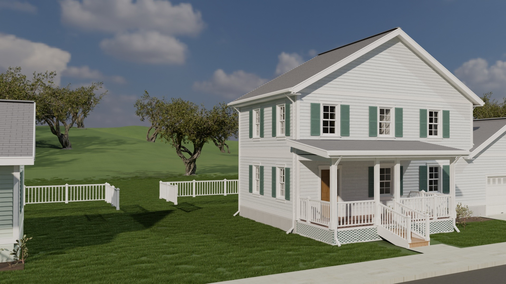
Draw a house wall by wall, or generate a whole street in one click. Every house stays fully editable.
From one wall to a whole street.
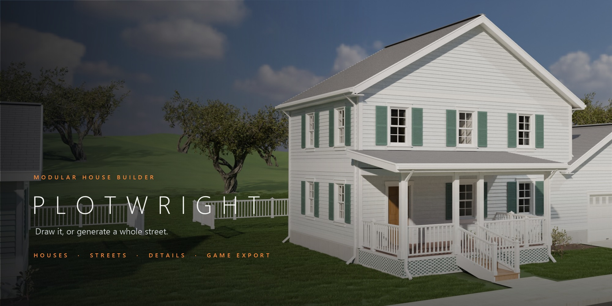
Video · 1:10Plan it, dress it, ship it.
Build or generate
Drag rooms, draw walls in 8 directions and click doors into place, or let the generator build a complete house or a whole street.
Dress
Roofs, stairs, porches, dormers, balconies and bay windows. Restyle any wall with siding, brick or plaster and paint it from the palette.
Ship
Render in Cycles or EEVEE, bake to reusable collections, mark them as assets, or export glTF and FBX with LODs and collision.
A finished house in one click.
Set the size or the floor area, the floors, the layout and the number of rooms, pick a roof and a style, and click Generate House. Plotwright plans the rooms, links every room to the hall with doors, spaces the windows, adds the stairs, the roof, the porch and the garage, and clads and paints it all. The result is not a dead mesh: it is an ordinary Plotwright house you can keep editing with every tool.
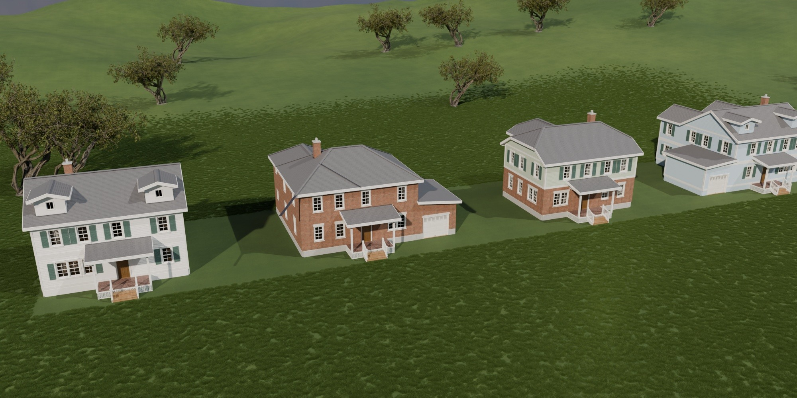
Rectangle · L · T · U layouts, one click eachReal floor plans
A hall with straight stairs, rooms split per floor, doors placed along a path that reaches every room, a front door and windows on every outside wall.
Endless variants
Every house comes from a seed. Click New Seed for another variant, or change one setting and Regenerate.
Lock what you like
Lock a house and no regeneration touches it. Edit it by hand like any other plot.
A whole neighbourhood before your coffee cools.
Pick one side, both sides or a small grid of blocks, set the number of lots, the lot size, the road and the sidewalks, and click Generate Street. Every lot gets its own seeded house and colour palette, plus a road, sidewalks, lawns, driveways, front walks and fences.
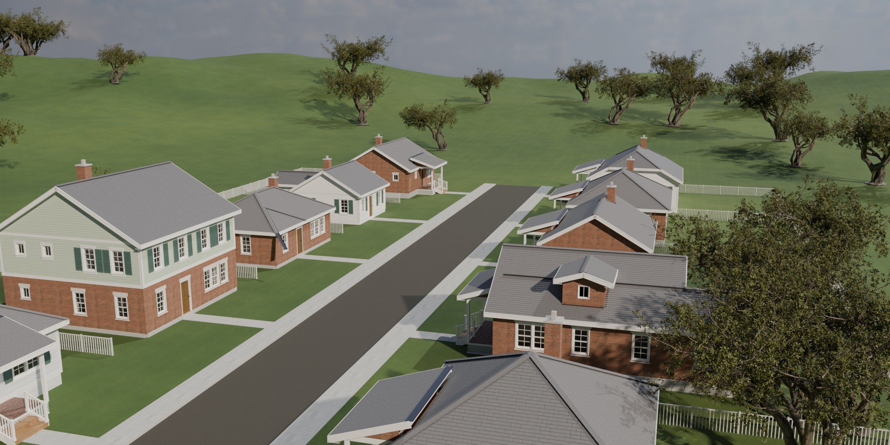
10 lots · both sides · one clickThe details that make it read as a home.
The new Details tool adds gable and shed dormers that cut into the roof with flashing around them, chimneys on a roof or against a wall, balconies with a railing and a door, and bay windows with their own little roof. Click Edit to resize any of them, and paint them like everything else. Drag the slider: the same house in clay and finished.
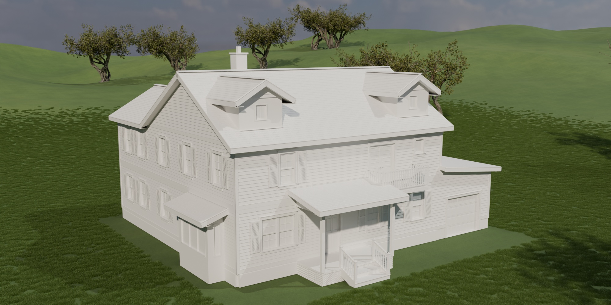

Walls, rooms and doors that just snap.
Drag a rectangle and you have a room with mitred walls and a floor. Draw single walls in eight directions; close a loop and the room appears, 45-degree wings included. Floors and ceilings follow every change, and a new storey arrives with a slab over the one below.
8-direction walls
Square and 45-degree runs on a grid, with clean corners and T-junctions. Pull a wall and the room follows.
Automatic rooms
Closed loops become rooms with floors, and ceilings once a storey sits above. Move, rotate or copy a room with its walls.
Storeys
Step floors up and down; storeys above the one you work on hide while you build.
Pick a door. Click a wall.
Doors, windows and storefronts snap along the wall in grid steps, cut their own hole and keep clear of corners. Slide them, flip them, chain-copy them, or drop the foundation under a garage door.
Every roof, one envelope.
Gable, hip, half-hip, shed or flat, on any room, in one click; Shift+click roofs the whole house. Overlapping roofs solve into one envelope with valleys, and every roof gets fascia, soffits, gutters and downspouts. Pull a roof past the wall and the underside is finished as a porch.
Restyle a house in one click.
Clad any wall face, a whole run or the entire outside of a building with siding, brick or plaster pieces, and paint walls, roofs, trims and details from the palette. A finished Residential pack with photographic materials is included, and you can build your own packs from your own meshes.
A drawing becomes a building.
Pick a floor plan image and type its width. Plotwright traces the walls, the doors and the windows, finds the rooms and builds the house over the drawing, floor by floor. The plan stays on the ground as a reference while you finish the details.
See inside while you work.
Walls facing the camera drop to low stubs as you orbit, so you can work on the rooms of any floor. Isolate hides everything except the plot you are building.
Ready for any engine.
Export a house or every house to glTF or FBX with naming presets for Unreal Engine, Unity and Godot: merged by material or per part, with LOD meshes and convex collision. Print measured floor plans as SVG, read the area of every room, and put your buildings in the Asset Browser.
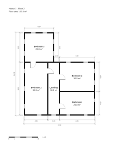
SVG floor plan · upper floor├ SM_House_1_LOD0 · LOD1 · LOD2 · LOD3
└ UCX_SM_House_1_00, _01 …
Floor plans House_1_Floor1.svg
House_1_Floor2.svg
Building info Floor 1 · 157 m² · 6 rooms
Floor 2 · 133 m² · 5 rooms
Total · 290 m²
Houses that feel lived in.
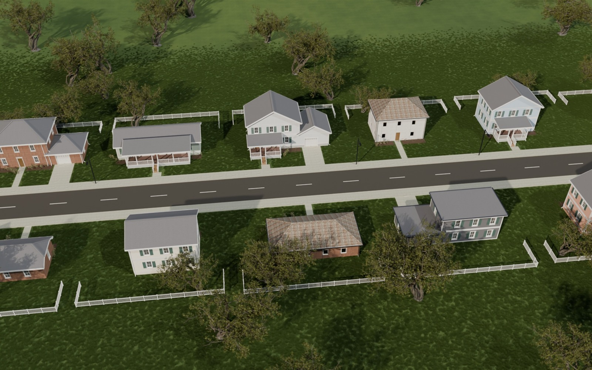
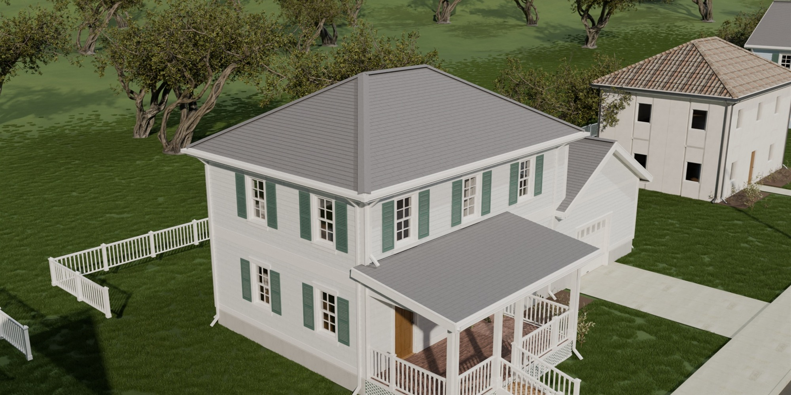
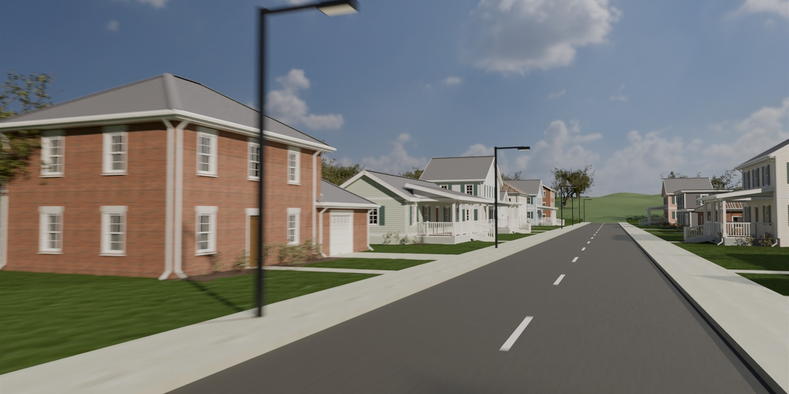
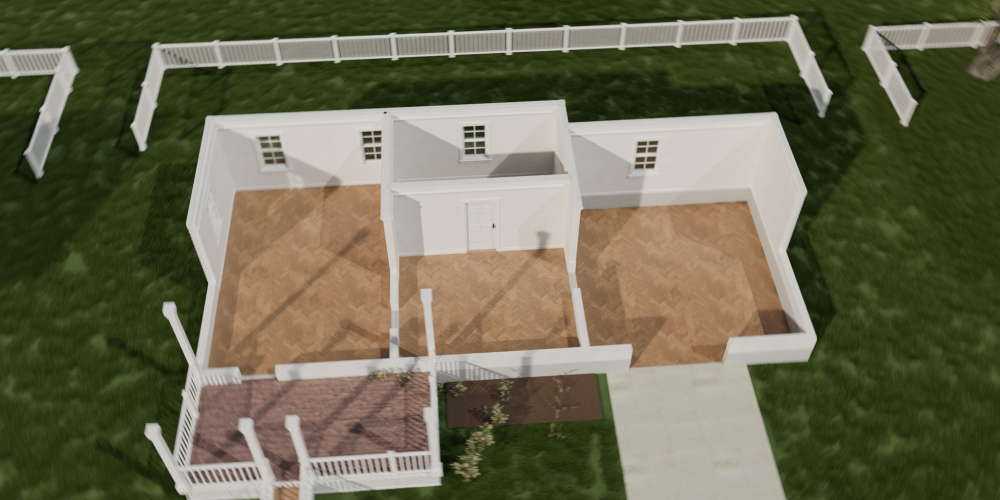
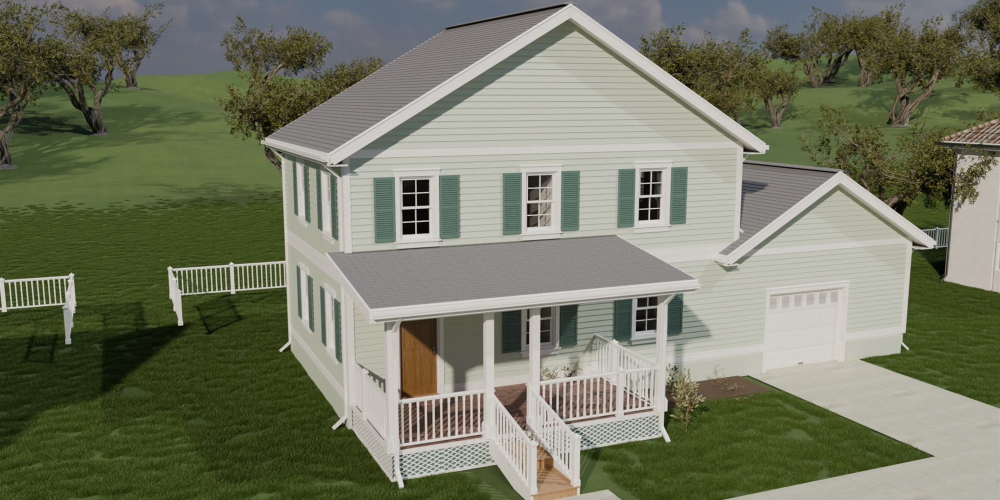
Rendered in Cycles. The houses, their materials, fences, porches and lawns' layout come straight from the add-on; trees, grass and sky were added for the shots.
Games, archviz, film and level design.
Game-ready houses
Export with LODs, UCX collision and engine naming, or keep the street as instanced collections.
Neighbourhoods
Surround a hero building with a believable street of houses in minutes.
Backgrounds
Whole suburbs for establishing shots and animation, rendered in Cycles or EEVEE.
Blockouts
The BasePack is a plain blockout with every piece type: plan levels first, dress them later.
A building model, not a pile of meshes.
Never a dead mesh
Walls, rooms, roofs and details live as data in the .blend; the meshes are rebuilt from it, so every change stays possible.
One step per edit
Every gesture is one undo step, including a whole generated house or street.
Looks right at once
A finished Residential pack with photographic materials and a sky is included.
Build Mode
A toolbar, ghosts, handles and a catalog dock right in the 3D viewport, with number-key tools.
Nothing to download
Packs and textures ship inside the add-on. No account and no internet connection needed.
Yours to extend
Make packs from your own meshes, and the add-on's source code comes with it (GPL).
13 tools, one toolbar.
Drag the building's grid onto the ground; rotate, move or resize it.
Single runs in 8 directions; Shift+drag for a room, Ctrl to delete.
Drag a rectangle: four mitred walls and a floor.
Five forms on any room, with arrows for footprint and ridge height.
Decks with skirts; rooms that touch them rise to meet them.
Railings or panel fences, run by run or as a rectangle.
Straight, L, U, switchback and spiral, with railings and stairwells.
Select anything, drag its handles, use the widget's actions.
Doors, windows, storefronts and plain doorways.
Pack pieces on wall faces, runs or whole buildings; fences and decks too.
Materials on any face, piece, roof or detail, with the same click grammar.
Dormers, chimneys, balconies and bay windows.
Place copies of your baked buildings anywhere.
The details.
Questions.
Can I edit a generated house?
Yes. Generated houses and streets are ordinary Plotwright plots: every tool works on them. Lock a house to protect it from regeneration.
Do I need my own assets?
No. The BasePack and the Residential pack are built in. You can add your own meshes as packs whenever you like.
Can I use the houses in Unreal, Unity or Godot?
Yes. Export glTF or FBX with engine naming, LODs and convex collision, per house or for all of them.
Can it build from a floor plan?
Yes. Pick a plan image, type its width and Plotwright traces the walls, doors and windows and builds the house.
Does it work in EEVEE?
Yes. The packs and materials work in EEVEE and Cycles.
Will it slow down my scene?
Only the plot you edit is rebuilt, storey by storey. Baked buildings become lightweight collection instances.
Does it download anything?
No. Everything ships inside the add-on and it never connects to the internet.
Can I sell what I make with it?
Yes. The buildings, renders and exports you make are yours to use in any project, commercial included.
How do I get updates?
New versions arrive through your Superhive account; install them over the old one by drag and drop.